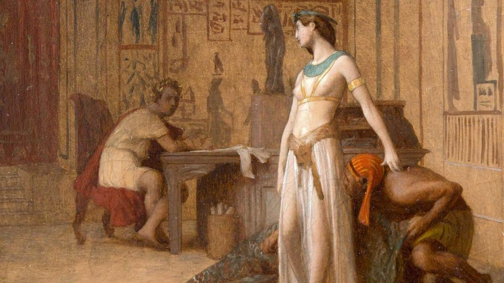

သမိုင်း ပညာရှင် တွေအကြားမှာ ရှေးအီဂျစ် တွေရဲ့ လူမျိုးနဲ့ ပတ်သက်လို့ အယူအဆ ၃ မျိုး ကွဲပြား နေပါတယ်။
ပထမ အယူအဆကတော့ ရှေးအီဂျစ် တွေဟာ ဆဟာရ တောင်ပိုင်းက အာဖရိကန် မျိုးနွယ်တွေ (sub-Saharan Africans) နဲ့ အမျိုးနွယ်တူ ဖြစ်တယ်ဆိုတဲ့ အယူအဆပဲ ဖြစ်ပါတယ်။ ဒီ ပညာရှင် တွေရဲ့ အယူအဆအရ ရှေးအီဂျစ်တွေဟာ အာဖရိက လူမည်း မျိုးနွယ်တွေ ဖြစ်ကြတယ်လို့ ယုံကြည် ကြပါတယ်။ ဒီ အာဖရိက လူမည်း အီဂျစ်တွေဟာ နောက်ပိုင်းမှာ မက်ဆီဒိုးနီးယား ဂရိတွေ၊ ရောမတွေနဲ့ အာရပ်တွေရဲ့ ကျူးကျော် ဝင်ရောက် လာမှုကြောင့် အီဂျစ်ကနေ ထွက်ပြေး ခဲ့ကြရတယ်လို့ ယူဆကြပါတယ်။
ဒုတိယ အယူအဆ ကတော့ ရှေးအီဂျစ်တွေဟာ ခေတ်သစ် ဥရောပ လူဖြူတွေရဲ့ ဘိုးဘေးတွေ ဖြစ်ကြတယ် ဆိုတဲ့ အယူပဲ ဖြစ်ပါတယ်။ ဒီ ပညာရှင် တွေက ရှေးအီဂျစ်တွေဟာ ခုခေတ် ဥရောပ တိုက်သားတွေလို အသားဖြူတယ်လို့ ယူဆ ကြပါတယ်။
တတိယ အယူအဆ ကတော့ ရှေးအီဂျစ်တွေနဲ့ ယခု ခေတ်သစ် အီဂျစ် လူမျိုးတွေ အကြားမှာ ဘာမှ ထူးထူးခြားခြား လူမျိုး ကွာခြားမှု မရှိဘူး ဆိုတဲ့ အယူပဲ ဖြစ်ပါတယ်။ တနည်းအားဖြင့် ခေတ်သစ် အီဂျစ်တွေဟာ ရှေးအီဂျစ် တွေကနေ ဘိုးစဉ်ဘောင်ဆက် ပေါက်ဖွား ဆင်းသက်လာ ကြတယ်လို့ ယုံကြည် ကြပါတယ်။ ဒီတော့ ရှေးအီဂျစ် တွေဟာ အခုခေတ် အီဂျစ်တွေ လိုပဲ
ဒီ ပြဿနာကို အဖြေရှာ ဖို့ဆိုရင် ရှေးအီဂျစ် မံမီတွေရဲ့ ဒီအန်အေ (DNA) မျိုးရိုးဗီဇကို ခွဲခြမ်း စိတ်ဖြာပြီး ခေတ်သစ် လူသားတွေရဲ့ ဒီအန်အေ နဲ့ တိုက်ဆိုင် ကြည့်ဖို့ လိုပါတယ်။ ဒါပေမယ့် ဒီအန်အေ ပညာရှင် တွေဟာ အီဂျစ် မံမီတွေရဲ့ ကြွင်းကျန်ရစ်တဲ့ အသားစက ဒီအန်အေကို လက်ရှိ နည်းပညာနဲ့ အပြည့်အစုံ ခွဲခြမ်း စိတ်ဖြာ ကြည့်ဖို့ မဖြစ်နိုင် ဘူးလို့ ယူဆခဲ့ ကြပါတယ်။

ဒီသုတေသနရဲ့ တွေ့ရှိချက် အရ ရှေးအီဂျစ်တွေဟာ မြေထဲပင်လယ် အရှေ့ပိုင်း ဒေသက ရှေးခေတ် လူမျိုးတွေနဲ့ မျိုးနွယ်တူတယ် ဆိုတာကို တွေ့ရှိ ခဲ့ကြပါတယ်။ ဒီဒေသဟာ Levant လို့ ခေါ်တဲ့ ဒေသဖြစ်ပြီး ခုခေတ် အီရတ်၊ အစ္စရေး၊ ဂျော်ဒန်၊ ဆီးရီးယား၊ တူရကီ နဲ့ လက်ဘနွန် တို့ ပါဝင်တဲ့ ဒေသ ဖြစ်ပါတယ်။
ဒီ ဒီအန်အေ ဆန်းစစ်မှုမှာ အသုံးပြု ခဲ့တဲ့ မံမီရုပ်ကြွင်း တွေဟာ အီဂျစ် နိုင်ငံတော်သစ် (New Kingdom) နဲ့ နောက်ပိုင်း ကာလတွေက မြှုပ်နှံခဲ့တဲ့ မံမီရုပ်ကြွင်းတွေ ဖြစ်ကြပါတယ်။ ဒီ မံမီတွေကို နှစ်ပေါင်း ၁၃၀၀ လောက် ကာလ အတွင်းမှာ မြှုပ်နှံခဲ့ ကြတာ ဖြစ်ပါတယ်။ ဒီကာလရဲ့ ခေတ်နှောင်းပိုင်းဟာ အီဂျစ်ပြည်ကို ရောမတွေ အုပ်စိုးနေတဲ့ ကာလလဲ ဖြစ်ပါတယ်။
ရှေး အီဂျစ်တွေရဲ့ ဒီအန်အေ နဲ့ ခေတ်သစ် အီဂျစ် ဒီအန်အေ အကြားမှာ ကွာခြားချက်တွေ ရှိပါတယ်။ ဥပမာ ခေတ်သစ် အီဂျစ် ဒီအန်အေရဲ့ ၈% ဟာ အာဖရိက အလယ်ပိုင်းက လူမည်းတွေရဲ့ ဒီအန်အေ ဖြစ်နေပါတယ်။ ရှေး အီဂျစ်တွေမှာ အာဖရိကန် မျိုးရိုးဟာ ဒီလောက် မများ ခဲ့ပါဘူး။
အာဖရိက အလယ်ပိုင်းက လူမျိုးနွယ် တွေရဲ့ ဒီအန်အေ အီဂျစ် လူထုကြား ရောက်ရှိ သွေးနှော လာခဲ့တာ လွန်ခဲ့တဲ့ နှစ် ၁၅၀၀ ခန့်အတွင်းကမှ ဖြစ်ပေါ်ခဲ့တာလို့ ယူဆ ရပါတယ်။ ဒီဖြစ်ရပ်ဟာ အာဖရိက အလယ်ပိုင်းက မျိုးနွယ်စုတွေကို ဖမ်းဆီးပြီး ကျွန်အဖြစ် ရောင်းချရာ ကနေ စတင်လာတယ်လို့ ယူဆ ကြပါတယ်။ ဒါမှ မဟုတ်လဲ အီဂျစ်ပြည်နဲ့ အာဖရိက အလယ်ပိုင်း ဒေသတွေ အကြား ကုန်သွယ် ကူးလူး ဆက်ဆံမှု ပိုများလာရာက အစပြု ခဲ့တာလဲ ဖြစ်နိုင်ပါတယ်။
ဒီအချက်က ဘာကို ပြနေလဲ ဆိုတော့ ရှေးအီဂျစ် တွေဟာ အခုခေတ်သစ် အီဂျစ် တွေထက် အသားပိုဖြူတယ် ဆိုတာပဲ ဖြစ်ပါတယ်။ သူတို့ရဲ့ အသားအရေဟာ မြေထဲပင်လယ် အရှေးပိုင်းကိ အစ္စရေး၊ ဂျော်ဒန်၊ လက်ဘနွန်၊ အီရတ် ဒေသက လူတွေရဲ့ အသားအရောင်လို အဖြူဖက် ပိုများမယ်လို့ ယူဆနိုင်ပါတယ်။
ရှေး အီဂျစ်ပြည်ဟာ အင်ပါယာ အဆက်ဆက်ရဲ့ ကျူးကျော် သိမ်းပိုက် စိုးမိုးမှုကို ကြိမ်ဖန်များစွာ ခံခဲ့ရပါတယ်။ မဟာ အလက်ဇန်းဒါး (Alexander the Great) က စလို့ ဂရိ၊ ရောမ နဲ့ အာရပ် တွေရဲ့ ကျူးကျော် သိမ်းပိုက်မှုကို အကြိမ်ကြိမ် ခံခဲ့ ရပါတယ်။
ဒီတော့ သုတေသီ တွေဟာ ဒီလို ပြည်ပ ကျူးကျော်မှုကြောင့် အီဂျစ် လူထုအတွင်းက မျိုးရိုး ပြောင်းလဲမှု ဘယ်လောက်အထိ ဖြစ်ခဲ့သလဲ၊ ပြည်ပ လူမျိုးနွယ် တွေနဲ့ ဘယ်လောက် အထိ သွေးနှော သွားခဲ့သလဲ ဆိုတာကို သိချင်ခဲ့ကြပါတယ်။
အခု သုတေသနမှာ အသုံးပြု ခဲ့တဲ့ မံမီရုပ်ကြွင်းတွေ မြှုပ်နှံရာ အဘူဆီယာ အယ်လ် မီလက် (Abusir el-Meleq) ဒေသက ရှေးလူတွေရဲ့ မျိုးရိုးဗီဇဟာ ဒီ ရှေးခေတ်ဟောင်း နှစ် ၁၃၀၀ ခန့်အတွင်းမှာ သိသာတဲ့ ပြောင်းလဲမှု ဖြစ်ပေါ်ခဲ့ခြင်း မရှိဘူးဆိုတာကို ဒီ သုတေသန အရ သိရှိ ကြရပါတယ်။
ဒါဟာ ဘာကို ပြနေသလဲ ဆိုတော့ အီဂျစ်ပြည်ကို ဂရိနဲ့ ရောမတွေ ဝင်ရောက် စိုးမိုး ခဲ့ပေမယ့် အီဂျစ်လူထုတွင်းကိုတော့ သိသာထင်ရှားတဲ့ သွေးနှောမှု ဖြစ်ပေါ်ခဲ့ခြင်း မရှိဘူး ဆိုတာကို ပြနေတာပဲ ဖြစ်ပါတယ်။
အခု သုတေသနကို ဂျာမနီ နိုင်ငံက နာမည်ကျော် မက်စ်ပလန့် သုတေသန ဌာန (Max Planck Institute) က ရှေးဟောင်း သုတေသီ ဂျိုဟန်နက်စ် ခရော့စ် (archaeogeneticist Johannes Krause) ဦးဆောင်တဲ့ အပြည်ပြည် ဆိုင်ရာ သုတေသီ တွေက ပြုလုပ်ခဲ့တာ ဖြစ်ပါတယ်။
သူက “အီဂျစ်ပြည်ရဲ့ ပူပြင်းတဲ့ ရာသီဥတုရယ်၊ သင်္ချိုင်းဂူ တွေအတွင်းက မြင့်မားတဲ့ စိုထိုင်းဆရယ်၊ နောက်ပြီး မံမီ ပြုလုပ်ရာမှာ အသုံးပြုတဲ့ ပစ္စည်းတွေကြောင့် မံမီတွေရဲ့ ဒီအန်အေ တွေဟာ လျင်မြန်စွာ ပျက်စီး ကုန်ကြလေ့ ရှိပါတယ်။ ဒီတော့ အီဂျစ်မံမီတွေရဲ့ ဒီအန်အေ ကာလကြာရှည် တည်မြဲဖို့ မဖြစ်နိုင်ဘူးလို့ ယူဆခဲ့ ကြပါတယ်” လို့ ရှင်းပြပါတယ်။
နောက်ပြီး မံမီရုပ်ကြွင်းကနေ ဒီအန်အေ ထုတ်ယူနိုင် ဦးတော့၊ ဒီ ဒီအန်အေ ကို ယုံကြည်စိတ်ချလို့ ရနိုင် မရနိုင် ဆိုတဲ့ ပြဿနာ ကလဲ ရှိနေ ပြန်ပါတယ်။ ဒါပေမယ့် ခရော့စ် နဲ့ အဖွဲ့ဟာ ရှေးမံမီက ဒီအန်အေကို ယုံကြည်စိတ်ချစွာ စမ်းစစ်နိုင်တဲ့ နည်းလမ်းကို တီထွင် နိုင်ခဲ့ ကြပါတယ်။
သူတို့အဖွဲ့ရဲ့ ဒီအန်အေ စမ်းစစ်မှုဟာ အီဂျစ် မံမီတွေရဲ့ ဒီအန်အေ နဲ့ ပတ်သက်လို့ ပထမဆုံး အပြည့်အစုံ စမ်းစစ်နိုင်မှုလဲ ဖြစ်ပါတယ်။
အခု သုတေသနမှာ အသုံးပြုတဲ့ ဒီအန်အေဟာ အဘူဆီယာ အယ်လ် မီလက် (Abusir el-Meleq) ဒေသက သင်္ချိုင်းဂူ တစ်ခုကနေ ရရှိတာ ဖြစ်ပါတယ်။ ဒီ ဒေသဟာ ကိုင်ရို မြို့တော်ရဲ့ တောင်ဖက် မိုင် ၇၀ ခန့်မှာ ရှိတဲ့ ရှေးဟောင်း မြို့တစ်မြို့ ဖြစ်ပါတယ်။
ဒီ မြို့မှာ အိုစိုင်းရစ် နတ်ဘုရား (Osiris) ကို ကိုးကွယ်တဲ့ ဘုရားကျောင်း တစ်ခုရှိပြီး ဒီဘုရားကျောင်းနဲ့ အတူ ယုံကြည် ကိုးကွယ်သူတွေကို မြှုပ်နှံရာ ရှေးသင်္ချိုင်း တစ်််ခုလဲ ရှိပါတယ်။
ဒီ သင်္ချိုင်း ထဲက မံမီရုပ်ကြွင်း ၉၀ ခန့်ရဲ့ ဒီအန်အေကို အောင်မြင်စွာ ထုတ်ယူ နိုင်ခဲ့ ကြပါတယ်။ ဒီ ဒီအန်အေကို သွား၊ အရိုးနဲ့ ကြွက်သား တွေကနေ ထုတ်ယူခဲ့ကြတာ ဖြစ်ပါတယ်။
ဒီ မံမီ ၉၀ အနက်က ဒီအန်အေ အပြည့်အစုံ ရရှိခဲ့တာကတော့ မံမီရုပ်ကြွင်း ၃ ခုပဲ ရှိပါတယ်။ ကျန်တဲ့ မံမီတွေက ရတဲ့ ဒီအန်အေ ကတော့ မပြည့်စုံတဲ့ အပိုင်းအစ အစိတ်အပိုင်းတွေပဲ ဖြစ်ပါတယ်။
ဒီ ဒီအန်အေ နမူနာ တွေကို ဂျာမနီက အထူး ဓါတ်ခွဲခန်း တခုမှာ ခွဲခြမ်းစိတ်ဖြာ စမ်းသပ်ခဲ့ ကြပါတယ်။ ဒီလို စမ်းသပ်ဖို့ ဓါတ်ခွဲခန်း တစ်ခုလုံးကို အထူး ပိုးသန့်စင် ပြီးမှ ဓါတ်ခွဲခဲ့ ကြတာ ဖြစ်ပါတယ်။
ဒီရှိတဲ့ ဒီအန်အေ ကို ခေတ်သစ် အီဂျစ် ၁၀၀ ဦးနဲ့ အီသီယိုးပီးယား လူမျိုး ၁၂၅ ဦးတို့ရဲ့ ဒီအန်အေနဲ့ တိုက်ဆိုင် ကြည့်ခဲ့ ကြပါတယ်။
ဒီ စစ်ဆေးမှု အရ ရှေးခေတ် “အီဂျစ်နိုင်ငံတော်သစ်” ရဲ့ နှစ် ၁,၃၀၀ ခန့် ကာလ အတွင်းမှာ အီဂျစ်လူထုရဲ့ ဒီအန်အေဟာ ပြောင်းလဲမှု၊ သွေးနှောမှု မရှိပဲ လုံးဝ တည်ငြိမ်နေခဲ့တယ် ဆိုတာကို တွေ့ရှိခဲ့ ကြပါတယ်။
ဒီ သုတေသနက အစောဆုံး မံမီဟာ ဘီစီ ၁,၃၈၈ က မြှုပ်နှံခဲ့တာ ဖြစ်ပါတယ်။ ဒီကာလဟာ အီဂျစ်ပြည်ရဲ့ အထွန်းတောက်ဆုံး ကာလလဲ ဖြစ်ပါတယ်။
နောက်အကျဆုံး ဒီအန်အေ ကတော့ အေဒီ ၄၂၆ မှာ မြှုပ်နှံခဲ့တာပါ။ ဒီကာလ မှာတော့ အီဂျစ်ပြည်ဟာ ရောမ အင်ပိုင်ယာရဲ့ အုပ်စိုးမှုအောက် ကျရောက်လို့ သွားခဲ့ပါပြီ။
ဒီ သုတေသနဟာ အကန့်အသတ် တွေတော့ ရှိနေပါသေးတယ်။ အဓိက အကန့်အသတ် ကတော့ ဒီအန်အေ နမူနာ အားလုံးဟာ ဒေသ တစ်ခုတည်းက သင်္ချိုင်း တစ်ခုထဲ ကနေ ရယူ ထားတာပဲ ဖြစ်ပါတယ်။ ဒီတော့ ဒီ ဒီအန်အေဟာ အီဂျစ်ပြည် တစ်ပြည်လုံးကို ကိုယ်စားပြုချင်မှ ပြုမှာ ဖြစ်ပါတယ်။
ဥပမာ အီဂျစ်ပြည် တောင်ပိုင်းက လူထုဟာ အာဖရိက လူမျိုးနွယ် တွေနဲ့ ပိုမို သွေးနှောတာမျိုးလဲ ဖြစ်ကောင်း ဖြစ်နိုင်ပါတယ်။
သုတေသီ တွေကတော့ နောက်ထပ် မံမီ တွေရဲ့ ဒီအန်အေကို စမ်းစစ်ကြည့်ခြင်း အားဖြင့် ဒီမေးခွန်းရဲ့ အဖြေကို သိရှိ နိုင်လိမ့်မယ်လို့ ယုံကြည် ကြပါတယ်။
Ref: Black or white? Ancient Egyptian race mystery now solved | Big Think